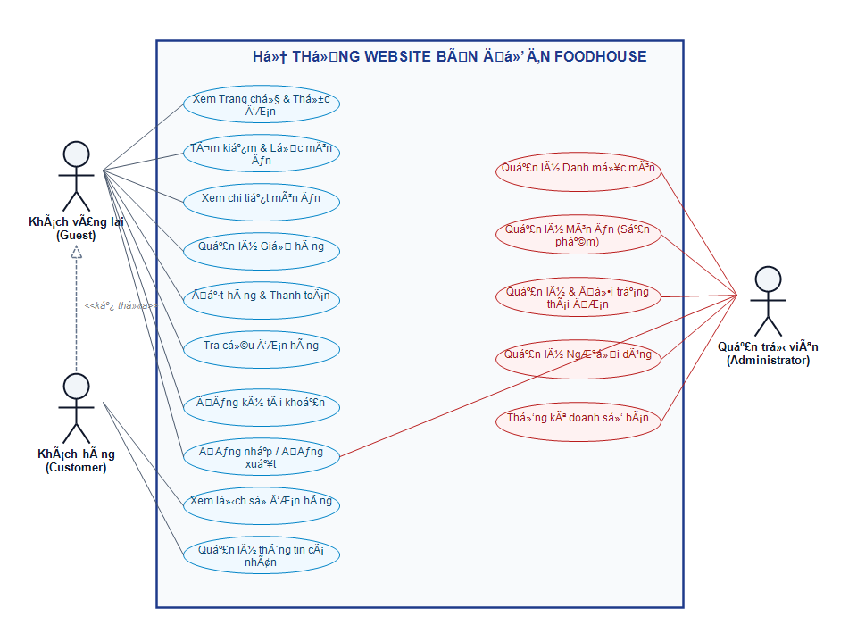
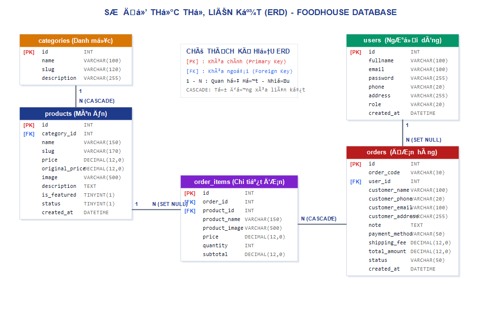

Sinh viên thực hiện: NGUYỄN CÔNG PHÚ
Mã sinh viên: 2924105628
Lớp chuyên ngành: TH29.26
Khoa: Công nghệ Thông tin
Giảng viên hướng dẫn: Giảng viên bộ môn CNTT
Trong bối cảnh nền kinh tế số và thương mại điện tử phát triển mạnh mẽ như hiện nay, thói quen tiêu dùng của người dân, đặc biệt là giới trẻ và giới văn phòng, đã có sự dịch chuyển lớn từ phương thức mua sắm trực tiếp truyền thống sang đặt hàng trực tuyến. Lĩnh vực ẩm thực, dịch vụ ăn uống nhanh (Fast Food & Beverage) là một trong những ngành có tốc độ tăng trưởng ấn tượng nhất, đòi hỏi các đơn vị cung cấp phải có các giải pháp công nghệ đáp ứng nhu cầu gọi món nhanh chóng, thuận tiện, minh bạch và chính xác.
Đề tài "Xây dựng Website bán đồ ăn nhanh trực tuyến FoodHouse" được nghiên cứu và triển khai nhằm giải quyết trọn vẹn bài toán kinh doanh ẩm thực trên môi trường Internet. Hệ thống không chỉ cung cấp giao diện bắt mắt, tối ưu trải nghiệm khách hàng từ khâu tra cứu thực đơn, chọn món, quản lý giỏ hàng đến đặt hàng giao tận nơi; mà còn xây dựng cơ chế cơ sở dữ liệu vững chắc, chuẩn hóa và bảo mật.
Tài liệu này tập trung trình bày toàn bộ quy trình khoa học bao gồm: Khảo sát và Phân tích yêu cầu hệ thống, Thiết kế mô hình Use Case và Thiết kế Cơ sở dữ liệu quan hệ (ERD & Data Dictionary). Đây là nền tảng cốt lõi định hình nên sự thành công, tính ổn định và khả năng mở rộng lâu dài của dự án FoodHouse.
Tại các đô thị hiện đại, nhịp sống bận rộn khiến nhu cầu sử dụng thức ăn nhanh như Burger, Gà rán, Pizza, khoai tây chiên và các loại đồ uống giải khát tăng cao liên tục. Tuy nhiên, các cửa hàng bán lẻ truyền thống thường gặp phải nhiều trở ngại:
Xuất phát từ thực tế đó, việc xây dựng website FoodHouse là hết sức cần thiết, mang lại lợi ích thiết thực cho cả người tiêu dùng lẫn chủ kinh doanh: giúp khách hàng thoải mái chọn món mọi lúc mọi nơi; đồng thời giúp cửa hàng tối ưu hóa quy trình vận hành và tiết kiệm chi phí nhân sự.
Hệ thống FoodHouse tập trung vào dịch vụ bán đồ ăn nhanh trực tuyến giao hàng tận nơi (Food Delivery) trong khu vực nội thành, phục vụ 5 danh mục món ăn chủ lực: Burger, Gà rán, Đồ ăn kèm, Pizza và Đồ uống.
| Đối tượng (Actor) | Mô tả vai trò | Quyền hạn chính trên hệ thống |
|---|---|---|
| Khách vãng lai (Guest) |
Người dùng truy cập vào website nhưng chưa đăng nhập hoặc chưa đăng ký tài khoản. | Xem trang chủ, xem thực đơn, lọc/tìm kiếm món ăn, xem chi tiết món, thêm vào giỏ hàng, đặt hàng thanh toán và tra cứu tình trạng đơn hàng bằng Mã đơn/SĐT. |
| Khách hàng thành viên (Customer) |
Người dùng đã đăng ký tài khoản thành viên và đăng nhập vào hệ thống. | Toàn bộ quyền của Khách vãng lai, đồng thời được tự động điền sẵn thông tin khi đặt hàng, xem lịch sử các đơn hàng đã đặt, quản lý thông tin hồ sơ cá nhân. |
| Quản trị viên (Administrator) |
Nhân sự quản lý hệ thống, có quyền can thiệp vào dữ liệu quản trị website. | Quản lý danh mục món ăn, quản lý thực đơn (thêm/sửa/xóa món, cập nhật giá, trạng thái còn/hết hàng), quản lý đơn hàng (tiếp nhận, duyệt, chuyển trạng thái đơn hàng), thống kê doanh số. |
Các yêu cầu chức năng của hệ thống FoodHouse được phân loại theo từng nhóm nghiệp vụ cốt lõi và mã hóa như sau:
| Mã FR | Tên chức năng | Mô tả chi tiết nghiệp vụ | Tác nhân |
|---|---|---|---|
| FR-01 | Đăng ký tài khoản | Cho phép người dùng tạo tài khoản mới bằng cách cung cấp Họ tên, Email, Mật khẩu, Số điện thoại và Địa chỉ. Hệ thống tự động kiểm tra trùng lặp email và mã hóa mật khẩu trước khi lưu. | Guest |
| FR-02 | Đăng nhập hệ thống | Xác thực người dùng qua Email và Mật khẩu. Hỗ trợ phân quyền tự động điều hướng sang giao diện Customer hoặc Admin tùy theo quyền hạn. | Guest / User |
| FR-03 | Đăng xuất hệ thống | Hủy phiên làm việc (Session) an toàn, đưa người dùng trở về trang chủ website. | Customer / Admin |
| FR-04 | Duyệt thực đơn theo danh mục | Hiển thị danh mục trực quan: Burger, Gà, Ăn kèm, Pizza, Đồ uống. Khi nhấn vào danh mục, hệ thống lọc danh sách món ăn tương ứng. | Tất cả |
| FR-05 | Tìm kiếm & Lọc món ăn | Hỗ trợ tìm kiếm theo từ khóa tên món hoặc mô tả; lọc theo các mức giá (< 40k, 40k - 60k, > 60k); sắp xếp theo giá tăng dần / giảm dần / mới nhất. | Tất cả |
| FR-06 | Xem chi tiết món ăn | Hiển thị đầy đủ thông tin: Ảnh minh họa phóng to, giá bán, giá gốc (tiết kiệm), thời gian chế biến dự kiến, thành phần nguyên liệu chi tiết và nút chọn số lượng đặt món. | Tất cả |
| FR-07 | Quản lý giỏ hàng (Cart) | Thêm món ăn vào giỏ (xử lý ngầm không gián đoạn trang qua AJAX), tăng/giảm số lượng món, xóa món khỏi giỏ, tự động tính tổng tiền hàng và phí vận chuyển cố định 15.000 VNĐ. | Guest / Customer |
| FR-08 | Đặt hàng & Thanh toán | Nhập thông tin người nhận (Họ tên, SĐT, Địa chỉ giao hàng, Ghi chú); lựa chọn hình thức thanh toán: COD (Tiền mặt khi nhận hàng) hoặc Chuyển khoản ngân hàng (Mã QR VietQR); hệ thống kiểm tra tính hợp lệ dữ liệu và tạo đơn. | Guest / Customer |
| FR-09 | Sinh mã đơn hàng tự động | Hệ thống tự động sinh mã định danh đơn hàng duy nhất theo định dạng chuẩn: DH-YYMMDD-XXXX để khách hàng và nhà hàng dễ dàng đối chiếu. |
Hệ thống |
| FR-10 | Tra cứu & Theo dõi đơn | Cho phép tra cứu tình trạng đơn hàng mọi lúc bằng Mã đơn hàng hoặc Số điện thoại. Hiển thị thanh tiến trình 4 giai đoạn: Chờ xác nhận → Đang chuẩn bị → Đang giao → Đã giao thành công. | Tất cả |
| FR-11 | Lịch sử mua hàng | Hiển thị danh sách tất cả các đơn hàng đã đặt của thành viên đã đăng nhập kèm chi tiết từng món ăn và tổng tiền. | Customer |
| FR-12 | Quản lý danh mục (Admin) | Xem, thêm mới, sửa tên, biểu tượng icon, mô tả và thứ tự hiển thị của các danh mục món ăn. | Admin |
| FR-13 | Quản lý món ăn (Admin) | Xem danh sách thực đơn, thêm món ăn mới, cập nhật giá tiền, tải ảnh món ăn, mô tả nguyên liệu, gắn nhãn món bán chạy / món nổi bật, bật/tắt trạng thái kinh doanh. | Admin |
| FR-14 | Quản lý đơn hàng (Admin) | Xem toàn bộ đơn hàng phát sinh trên website, tìm kiếm đơn theo khách hàng, cập nhật chuyển trạng thái đơn (từ Chờ xác nhận sang Đang giao, Đã giao hoặc Hủy đơn). | Admin |
#f97316 và đỏ thẫm #b91c1c) tạo cảm giác kích thích vị giác và ngon miệng.BCRYPT qua hàm password_hash() của PHP, ngăn chặn hoàn toàn việc rò rỉ mật khẩu gốc.htmlspecialchars() để vô hiệu hóa các mã kịch bản độc hại (chống tấn công XSS - Cross-Site Scripting).database.sql, hoặc chuyển tiếp mượt mà sang tệp cơ sở dữ liệu cục bộ food_shop.sqlite mà không làm gián đoạn trải nghiệm của người dùng.
beginTransaction() → commit() → rollBack()), đảm bảo không bao giờ xảy ra tình trạng có đơn hàng nhưng thiếu chi tiết món ăn.Hệ thống FoodHouse gồm có 3 tác nhân chính tương tác trực tiếp với các chức năng:
Dưới đây là sơ đồ Use Case tổng quát thể hiện toàn bộ các ca sử dụng của hệ thống FoodHouse và mối liên kết với các tác nhân:

| STT | Tên Use Case | Guest | Customer | Administrator |
|---|---|---|---|---|
| 1 | Xem Trang chủ & Thực đơn món ăn | ✔ | ✔ | ✔ |
| 2 | Tìm kiếm & Lọc món ăn theo giá/loại | ✔ | ✔ | ✔ |
| 3 | Xem chi tiết món & nguyên liệu | ✔ | ✔ | ✔ |
| 4 | Thêm & Cập nhật giỏ hàng (AJAX) | ✔ | ✔ | ✔ |
| 5 | Đặt hàng & Thanh toán (Checkout) | ✔ | ✔ | — |
| 6 | Tra cứu tình trạng đơn hàng | ✔ | ✔ | ✔ |
| 7 | Đăng ký tài khoản thành viên | ✔ | — | — |
| 8 | Đăng nhập & Đăng xuất | ✔ | ✔ | ✔ |
| 9 | Xem lịch sử các đơn hàng của mình | — | ✔ | — |
| 10 | Quản lý Danh mục món ăn | — | — | ✔ |
| 11 | Quản lý Món ăn (Thêm/Sửa/Xóa/Giá) | — | — | ✔ |
| 12 | Quản lý & Cập nhật trạng thái Đơn | — | — | ✔ |
| Tên Use Case | UC-01: Đăng ký tài khoản (Register) |
|---|---|
| Tác nhân (Actor) | Khách vãng lai (Guest) |
| Mô tả tóm tắt | Cho phép người dùng chưa có tài khoản đăng ký trở thành thành viên của hệ thống FoodHouse. |
| Tiền điều kiện | Người dùng đã truy cập vào website và chưa đăng nhập. |
| Hậu điều kiện | Một bản ghi tài khoản mới được ghi vào bảng users; phiên làm việc được khởi tạo (tự động đăng nhập). |
| Luồng sự kiện chính (Main Flow) |
|
| Luồng rẽ nhánh (Alternative Flow) |
4a. Email đã tồn tại: Hệ thống giữ lại các thông tin đã nhập (trừ mật khẩu) và thông báo: "Email này đã được đăng ký trên hệ thống!". 4b. Mật khẩu xác nhận không khớp: Hệ thống yêu cầu người dùng nhập lại mật khẩu xác nhận. |
| Tên Use Case | UC-04: Quản lý giỏ hàng (Cart Management) |
|---|---|
| Tác nhân (Actor) | Khách vãng lai (Guest), Khách hàng (Customer) |
| Mô tả tóm tắt | Cho phép người dùng thêm món ăn vào giỏ, điều chỉnh số lượng tăng/giảm hoặc xóa món ăn khỏi giỏ hàng. |
| Tiền điều kiện | Người dùng đang duyệt thực đơn hoặc trang chi tiết món ăn. |
| Hậu điều kiện | Thông tin giỏ hàng trong Session (hoặc Database) được cập nhật đồng bộ; hiển thị tổng tiền chính xác. |
| Luồng sự kiện chính (Main Flow) |
|
| Luồng rẽ nhánh (Alternative Flow) | 3a. Món ăn tạm hết hàng: Hệ thống từ chối thêm vào giỏ và thông báo: "Món ăn hiện tại đang tạm hết hàng, quý khách vui lòng chọn món khác!". |
| Tên Use Case | UC-05: Đặt hàng và Thanh toán (Checkout) |
|---|---|
| Tác nhân (Actor) | Khách vãng lai (Guest), Khách hàng (Customer) |
| Mô tả tóm tắt | Người dùng nhập thông tin giao nhận, lựa chọn hình thức thanh toán và gửi đơn hàng tới cửa hàng. |
| Tiền điều kiện | Giỏ hàng của người dùng phải có ít nhất 01 món ăn. |
| Hậu điều kiện | Hệ thống ghi nhận đơn hàng mới vào bảng orders và các món ăn tương ứng vào bảng order_items; giỏ hàng được làm sạch. |
| Luồng sự kiện chính (Main Flow) |
|
| Luồng rẽ nhánh (Alternative Flow) |
3a. Thiếu thông tin bắt buộc: Nếu người dùng để trống Họ tên, SĐT hoặc Địa chỉ, hệ thống cảnh báo cụ thể trường dữ liệu còn thiếu. 6a. Lỗi hệ thống cơ sở dữ liệu: Hệ thống tự động Rollback giao dịch, giữ nguyên giỏ hàng và thông báo người dùng thử lại. |
| Tên Use Case | UC-06: Tra cứu & Theo dõi trạng thái đơn hàng |
|---|---|
| Tác nhân (Actor) | Tất cả người dùng (Guest / Customer / Admin) |
| Mô tả tóm tắt | Cho phép người dùng kiểm tra tiến độ giao hàng và thông tin đơn hàng bất kỳ lúc nào mà không cần đăng nhập. |
| Tiền điều kiện | Đơn hàng đã được tạo thành công trên hệ thống. |
| Hậu điều kiện | Hiển thị trạng thái thời gian thực và chi tiết các món trong đơn hàng. |
| Luồng sự kiện chính (Main Flow) |
|
| Luồng rẽ nhánh (Alternative Flow) | 3a. Không tìm thấy đơn hàng: Hệ thống thông báo: "Không tìm thấy đơn hàng nào phù hợp với mã hoặc số điện thoại bạn vừa nhập. Vui lòng kiểm tra lại!". |
Cơ sở dữ liệu của hệ thống FoodHouse được đặt tên là food_shop, được chuẩn hóa ở dạng chuẩn 3 (3NF - Third Normal Form) nhằm đảm bảo tính toàn vẹn, tránh dư thừa dữ liệu và tối ưu hiệu suất truy vấn. Cơ sở dữ liệu bao gồm 5 thực thể chính:
1 - N). Một món ăn bắt buộc phải thuộc về một danh mục cụ thể (khóa ngoại category_id tham chiếu đến categories.id). Hành vi khi xóa danh mục: ON DELETE CASCADE.1 - N). Đơn hàng có thể liên kết với một user_id hoặc để trống (NULL) trong trường hợp khách vãng lai đặt hàng không qua đăng nhập. Hành vi khi xóa tài khoản: ON DELETE SET NULL để lưu vết lịch sử hóa đơn.1 - N). Mỗi chi tiết món ăn thuộc về duy nhất một đơn hàng (khóa ngoại order_id tham chiếu đến orders.id). Hành vi khi hủy/xóa đơn: ON DELETE CASCADE.product_id trong bảng order_items tham chiếu đến products.id với hành vi ON DELETE SET NULL, kết hợp lưu trữ trực tiếp product_name và price để đảm bảo hóa đơn quá khứ không bị thay đổi khi sản phẩm cập nhật giá trong tương lai.Dưới đây là sơ đồ chi tiết biểu diễn cấu trúc các bảng và mối liên kết khóa ngoại giữa các bảng trong cơ sở dữ liệu FoodHouse:

users (Quản lý người dùng & phân quyền)Bảng lưu trữ danh sách tài khoản của hệ thống bao gồm cả khách hàng và quản trị viên.
| Tên cột | Kiểu dữ liệu | Khóa | Null | Mặc định | Ý nghĩa / Mô tả |
|---|---|---|---|---|---|
| id | INT | PK | No | AUTO_INCREMENT | Mã định danh duy nhất của người dùng |
| fullname | VARCHAR(100) | No | None | Họ và tên đầy đủ của người dùng | |
| VARCHAR(100) | UNIQUE | No | None | Email đăng nhập (duy nhất trên toàn hệ thống) | |
| password | VARCHAR(255) | No | None | Mật khẩu đã được mã hóa BCRYPT (60 ký tự) | |
| phone | VARCHAR(20) | Yes | NULL | Số điện thoại liên hệ | |
| address | VARCHAR(255) | Yes | NULL | Địa chỉ giao hàng mặc định | |
| role | VARCHAR(20) | No | 'customer' | Vai trò người dùng: 'admin' hoặc 'customer' | |
| created_at | DATETIME | No | CURRENT_TIMESTAMP | Thời điểm tạo tài khoản |
categories (Danh mục phân loại món ăn)Bảng lưu trữ các danh mục ẩm thực chính (Burger, Gà, Ăn kèm, Pizza, Đồ uống).
| Tên cột | Kiểu dữ liệu | Khóa | Null | Mặc định | Ý nghĩa / Mô tả |
|---|---|---|---|---|---|
| id | INT | PK | No | AUTO_INCREMENT | Mã định danh danh mục |
| name | VARCHAR(100) | No | None | Tên danh mục (ví dụ: Burger, Gà, Pizza...) | |
| slug | VARCHAR(120) | UNIQUE | No | None | Chuỗi định danh URL thân thiện (vd: burger, ga) |
| description | VARCHAR(255) | Yes | NULL | Mô tả ngắn gọn về nhóm món ăn |
products (Danh sách món ăn / Thực đơn)Bảng lưu trữ toàn bộ các món ăn kinh doanh tại FoodHouse kèm hình ảnh, giá cả và nguyên liệu.
| Tên cột | Kiểu dữ liệu | Khóa | Null | Mặc định | Ý nghĩa / Mô tả |
|---|---|---|---|---|---|
| id | INT | PK | No | AUTO_INCREMENT | Mã định danh món ăn |
| category_id | INT | FK | No | None | Khóa ngoại tham chiếu tới bảng categories.id |
| name | VARCHAR(150) | No | None | Tên món ăn (Burger bò Úc, Gà sốt BBQ...) | |
| slug | VARCHAR(170) | No | None | Đường dẫn tĩnh thân thiện SEO cho món ăn | |
| price | DECIMAL(12, 0) | No | None | Giá bán hiện tại áp dụng cho khách (VNĐ) | |
| original_price | DECIMAL(12, 0) | Yes | NULL | Giá gốc trước khi giảm (dùng gạch ngang khuyến mãi) | |
| image | VARCHAR(500) | Yes | NULL | Đường dẫn URL ảnh chất lượng cao của món ăn | |
| description | TEXT | Yes | NULL | Mô tả chi tiết hương vị, nguyên liệu chế biến | |
| is_featured | TINYINT(1) | No | 0 | 1: Món nổi bật hiển thị ở Banner/Trang chủ; 0: Bình thường | |
| status | TINYINT(1) | No | 1 | 1: Đang bán (Available); 0: Tạm hết hàng | |
| created_at | DATETIME | No | CURRENT_TIMESTAMP | Thời gian thêm món ăn vào hệ thống |
orders (Đơn đặt hàng)Bảng lưu trữ thông tin hóa đơn giao dịch, người nhận hàng và trạng thái đơn hàng.
| Tên cột | Kiểu dữ liệu | Khóa | Null | Mặc định | Ý nghĩa / Mô tả |
|---|---|---|---|---|---|
| id | INT | PK | No | AUTO_INCREMENT | Mã định danh đơn hàng |
| order_code | VARCHAR(30) | UNIQUE | No | None | Mã đơn hàng hiển thị (vd: DH261020-5628) |
| user_id | INT | FK | Yes | NULL | Khóa ngoại tham chiếu tới users.id (NULL nếu là khách vãng lai) |
| customer_name | VARCHAR(100) | No | None | Họ và tên người nhận hàng | |
| customer_phone | VARCHAR(20) | No | None | Số điện thoại nhận hàng (dùng để tra cứu) | |
| customer_email | VARCHAR(100) | Yes | NULL | Email nhận hóa đơn điện tử | |
| customer_address | VARCHAR(255) | No | None | Địa chỉ cụ thể nhận đồ ăn | |
| note | TEXT | Yes | NULL | Ghi chú cho bếp và shipper | |
| payment_method | VARCHAR(50) | No | 'COD' | Hình thức: 'COD' hoặc 'Banking' | |
| shipping_fee | DECIMAL(12, 0) | No | 15000 | Phí giao hàng nội thành (mặc định 15.000 VNĐ) | |
| total_amount | DECIMAL(12, 0) | No | None | Tổng tiền đơn hàng bao gồm tiền món + phí ship | |
| status | VARCHAR(50) | No | 'Chờ xác nhận' | Trạng thái: 'Chờ xác nhận', 'Đang chuẩn bị', 'Đang giao', 'Đã giao', 'Đã hủy' | |
| created_at | DATETIME | No | CURRENT_TIMESTAMP | Thời điểm khách hàng gửi đơn hàng |
order_items (Chi tiết từng món trong đơn hàng)Bảng lưu trữ thông tin từng món ăn thuộc một đơn hàng cụ thể.
| Tên cột | Kiểu dữ liệu | Khóa | Null | Mặc định | Ý nghĩa / Mô tả |
|---|---|---|---|---|---|
| id | INT | PK | No | AUTO_INCREMENT | Mã định danh chi tiết đơn hàng |
| order_id | INT | FK | No | None | Khóa ngoại tham chiếu tới orders.id (CASCADE) |
| product_id | INT | FK | Yes | NULL | Khóa ngoại tham chiếu tới products.id (SET NULL) |
| product_name | VARCHAR(150) | No | None | Tên món ăn tại thời điểm mua (bảo toàn lịch sử) | |
| product_image | VARCHAR(500) | Yes | NULL | Ảnh minh họa món ăn hiển thị trên hóa đơn | |
| price | DECIMAL(12, 0) | No | None | Đơn giá món ăn tại thời điểm đặt hàng | |
| quantity | INT | No | 1 | Số lượng món ăn đặt mua (>= 1) | |
| subtotal | DECIMAL(12, 0) | No | None | Thành tiền cho món = price × quantity |
products.category_id và categories.id. Khi một danh mục bị xóa, toàn bộ các món ăn thuộc danh mục đó sẽ tự động bị xóa theo (ON DELETE CASCADE) nhằm đảm bảo không tồn tại món ăn mồ côi danh mục.orders.user_id và users.id. Khi một tài khoản người dùng bị xóa khỏi hệ thống, trường user_id trong các đơn hàng tương ứng sẽ được đặt về giá trị NULL (ON DELETE SET NULL), giúp duy trì trọn vẹn số liệu thống kê kế toán và lịch sử giao hàng.order_items.order_id và orders.id. Khi một đơn hàng bị hủy bỏ hoàn toàn hoặc xóa khỏi hệ thống, các chi tiết đơn hàng tương ứng cũng tự động bị xóa đồng loạt (ON DELETE CASCADE).order_items.product_id và products.id. Khi một món ăn bị xóa khỏi danh mục bán, trường product_id trong chi tiết hóa đơn cũ chuyển sang NULL (ON DELETE SET NULL). Nhờ có các cột độc lập product_name và price, hóa đơn cũ vẫn hiển thị đầy đủ tên món và giá trị ban đầu.Hệ thống FoodHouse được tổ chức theo mô hình kiến trúc phân tầng dạng MVC-Lite kết hợp hướng mô-đun (Modular Procedure-Oriented), tách biệt rõ ràng giữa các thành phần cấu hình, thư viện dùng chung, giao diện người dùng và điểm cuối API:
config/): Chứa app.php định nghĩa các hằng số hệ thống, phí vận chuyển, đường dẫn gốc; database.php thiết lập kết nối PDO và tự động xử lý Fallback giữa MySQL và SQLite.includes/):
Chứa header.php, navbar.php, footer.php định dạng giao diện đồng nhất; functions.php tập hợp toàn bộ hàm nghiệp vụ (xử lý giỏ hàng Session, định dạng tiền tệ VNĐ, sinh mã đơn hàng, làm sạch dữ liệu); auth.php kiểm soát phân quyền đăng nhập.
api/): File cart_action.php tiếp nhận các yêu cầu thêm món, cập nhật số lượng và xóa món từ JavaScript, trả về phản hồi định dạng JSON tức thì.index.php, products.php, product_detail.php, cart.php, checkout.php, orders.php...) đảm nhiệm việc hiển thị dữ liệu và tương tác trực tiếp với khách hàng.Hệ thống điều hướng của website FoodHouse được bố trí mạch lạc, giúp người dùng dễ dàng chuyển đổi qua lại giữa các khu vực chức năng:
index.php):
Banner quảng bá → Lưới 5 danh mục → Món ăn nổi bật (Best Seller) → Chương trình khuyến mãi → Đánh giá thương hiệu.
products.php):
Thanh tìm kiếm → Bộ lọc danh mục → Bộ lọc khoảng giá → Sắp xếp theo giá → Lưới danh sách món ăn → Nút đặt nhanh.
product_detail.php):
Ảnh lớn → Tên món, đơn giá, giá gốc → Thời gian chế biến → Thành phần chi tiết → Tùy chọn số lượng → Nút "Thêm vào giỏ hàng".
cart.php):
Danh sách các món đã chọn kèm ảnh → Nút tăng/giảm số lượng → Tạm tính tiền món → Phí vận chuyển 15.000 VNĐ → Tổng thanh toán → Nút "Tiến hành đặt hàng".
checkout.php):
Biểu mẫu thông tin giao hàng → Chọn hình thức COD / Chuyển khoản QR → Xác nhận đặt món → Chuyển tiếp tới order_success.php.
orders.php):
Ô nhập mã đơn/SĐT → Danh sách đơn hàng → Thanh trạng thái 4 bước (Chờ xác nhận → Đang chuẩn bị → Đang giao → Đã giao).
Sau quá trình nghiên cứu, phân tích nghiệp vụ và lập trình triển khai thực tế, dự án Website bán đồ ăn nhanh trực tuyến FoodHouse đã hoàn thành xuất sắc các mục tiêu đề ra ban đầu: